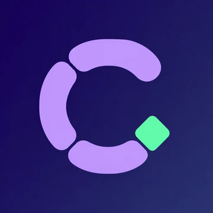

GPT Continuity Builder
Resume a build in a new ChatGPT session with your decisions, verified progress, and next action ready to use.
Get the GPT instructions
Build your Continuity skill
Copy the instructions into ChatGPT. Add your project name, goal, and the sources you want it to use.